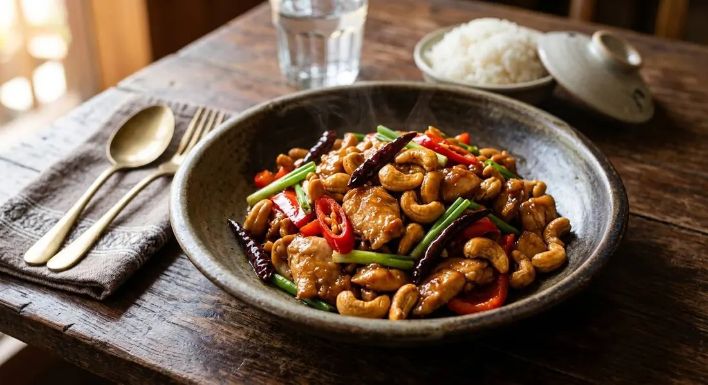

Floured chicken fried golden, roasted cashews, fried dried chillies and spring onion, tossed in an oyster-sauce gloss. The dish born in Bangkok's Chinese restaurants.

ไก่ผัดเม็ดมะม่วงหิมพานต์ is the stir-fry every Thai knows from restaurant menus rather than home kitchens — a dish of Bangkok's Chinese restaurant lineage, cooked fast, glossed dark, and finished with things that crunch. Chicken, cashews, and the boldest move of all: dried chillies, fried whole and eaten like crisps. A plate of it is sweet, salty, nutty and smoky all at once, and it goes over rice with an authority few stir-fries match.
The architecture is simple but each part is treated separately. The chicken is floured and fried — the source's method — so each piece keeps a thin golden jacket instead of stewing in the wok. The cashews get their own gentle fry, or better, a dry-toast: the source's trick, five to eight minutes over low-medium heat, which keeps them crisp far longer because they never soak oil. The dried chillies go in the oil for seconds, just until they colour and turn brittle.
Then everything meets the garlic, the oyster sauce and a spoon of sugar, and leaves the wok glossy. The vegetable additions — onion, spring onion, pepper — go in all at once with the sauce, the source's other rule, so nothing over-cooks while the pan sits.
| Thai | English | Amount |
|---|---|---|
| อกไก่ (หรือสะโพกไก่) | Chicken breast, sliced — or thigh, the source's preference | 1½ cups |
| แป้งสาลี | Plain flour, for coating | ½ cup |
| เม็ดมะม่วงหิมพานต์อบ | Roasted cashews | ½ cup |
| ซอสหอยนางรม | Oyster sauce, the rich kind | 2 tbsp |
| พริกแห้งเม็ดใหญ่ | Large dried chillies | 15 |
| พริกชี้ฟ้าสีแดง | Red spur chillies | 2 |
| กระเทียมไทย | Thai garlic cloves | 3 |
| น้ำตาลทราย | Sugar | 1¼ tsp |
| ต้นหอม | Spring onions | 2 |
| น้ำมันพืช | Neutral oil, for frying | as needed |
Thigh or breast. The aroifin source is blunt: thigh is the softest choice; breast needs a fifteen-minute marinade first or it goes hard. The Deksomboon recipe uses breast floured and fried, which protects it.
Fried or stir-fried chicken. The Chinese-restaurant method flours and deep-fries the chicken; home versions sometimes stir-fry it bare. The flour jacket is what holds the sauce's gloss.
The cashews. Fried briefly (Deksomboon) or dry-toasted five to eight minutes (aroifin). The dry-toast is the better trick — same crisp, no oil soak, longer crunch.
The dried chillies. Fifteen in the published recipe — fried whole pieces you eat. Reduce or deseed for a milder plate; remove none if you want the real thing.
Vegetables. Some recipes add onion, pepper or carrot. The source's rule for all of them: in with the sauce, all at once.
This recipe is translated from the following Thai-language sources. Where they disagree, we've said so.
1. Deksomboon (เด็กสมบูรณ์) — "ไก่ผัดเม็ดมะม่วงหิมพานต์" (full quantities, the floured-fried method) — deksomboon.com
2. aroifin — "วิธีทำ ไก่ผัดเม็ดมะม่วง สูตรเด็ด เนื้อไก่ฉ่ำ" (the thigh-vs-breast advice, the dry-toasting trick, the all-at-once rule) — aroifin.com